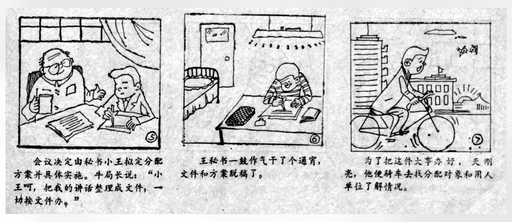

乃栋改编、绘画 《人事》1988年第5期（总第32期），第31页
秘书小王（续二）
Secretary Xiao Wang (continued, 2)
- Panel text
- 会议决定由秘书小王拟定分配方案并具体实施。牛局长说：“小王呵，把我的讲话整理成文件，一切按文件办。”
5. The meeting decided that Secretary Xiao Wang would draw up the assignment plan and carry it out. Bureau Chief Niu said: “Xiao Wang, turn my speech into a document, and do everything according to the document.” - 王秘书一鼓作气干了个通宵，文件和方案脱稿了。
6. Secretary Wang worked straight through the night, and the document and the plan were finished. - 为了把这件大事办好，天刚亮，他便骑车去找分配对象和用人单位了解情况。
7. To do this important job well, at first light he set off by bicycle to see the graduates and the employing units and find out how things stood.
- 会议决定由秘书小王拟定分配方案并具体实施。牛局长说：“小王呵，把我的讲话整理成文件，一切按文件办。”
- Description
- Panels 5–7: the chief tells Wang to turn his speech into a document and follow it to the letter; Wang works through the night drafting it; at dawn he cycles off to visit the graduates and employers.
- Artist
- Nai Dong 乃栋 (adapted and drawn)
- Published in
- 《人事》1988年第5期（总第32期）, p. 31
- Themes
- Paperwork and documents · Bureaucratism · Picture stories (连环画)

Cite
Nai Dong, “秘书小王（续二）” [Secretary Xiao Wang (continued, 2)], Renshi (Personnel) 《人事》, 1988, no. 5, p. 31.